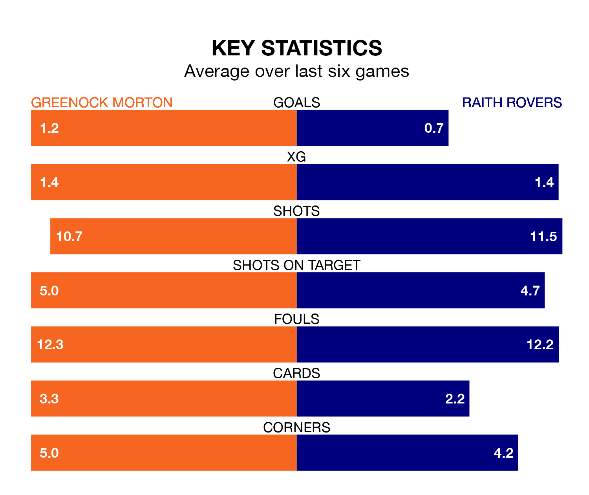

Raith Rovers travel to Greenock Morton on Saturday in the Championship.
The visitors come into the game on the back of a win in their last match, having beaten Inverness CT 1-0 away, with a goal from Lewis Vaughan.
The Ton also won their last match, 2-1 against Arbroath, with their goals scored by George Oakley and Robbie Crawford.
With 53 goals in 34 games so far this season, Raith are the league's third-highest scorers with 1.6 goals per game. And they are conceding fewer than average, letting in 42 goals at a rate of 1.2 per game.
Greenock Morton, meanwhile, are below average scorers, with 1.2 goals per game, compared to a league average of 1.4. They have conceded 1.3 goals per game.
With Maciej Dabrowski between the sticks, Rovers can rely on one of the league's safest pair of hands. He has kept 10 clean sheets in his 32 appearances this season, and only one other 'keeper – Dundee United's Jack Walton – has been able to prevent the opposition scoring on more occasions in the Championship.
In the Ton's net, Ryan Mullen has eight clean sheets in 21 games.
The away side are second in the table after 34 games, of which they have won 19 and drawn eight, earning 65 points.
The hosts are three places behind Raith in fifth, with 12 wins and eight draws putting them on 44 points.
In the last 10 years, Greenock Morton and Raith have played each other on 23 occasions. Greenock Morton won six of them, Raith 13, and they drew four times.
On average, the Ton scored 0.9 goals and Raith 1.4 in those matches.
Their last meeting was on February 27, when they played out a 0-0 draw.
Greenock Morton are in mixed form in the Championship, with two wins and a draw from their last six games.
With two wins and two draws over that period, Raith's form is slightly better – they have taken eight points from 18, compared to Greenock Morton's seven.
Updated: 07:59 (UTC), 26/04/24